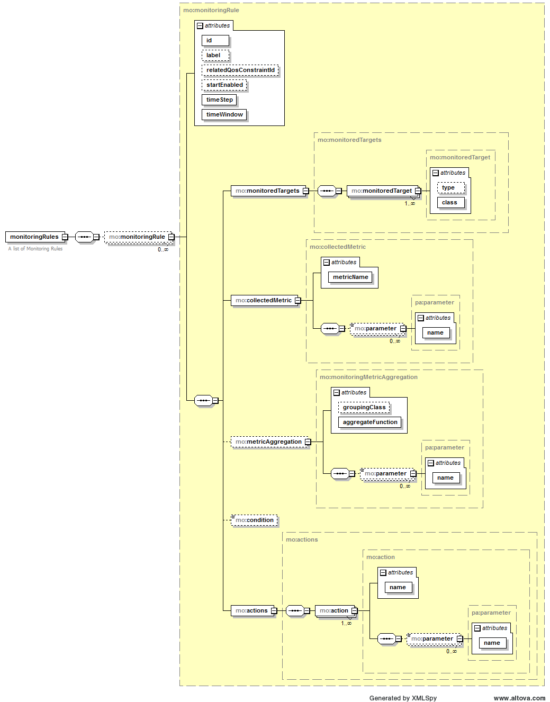

Rules
Tower 4Clouds rules are "recipes" that describe what and how the monitoring platform should monitor and how monitoring data should be aggregated. The user can also specify actions to be performed and conditions under which actions should be performed.
The metamodel of a monitoring rule is formally specified as an XML schema, available here.
Here is a graphical representation of the schema:

Here is a list of the attributes with a short description:
- metricName: the name of the target metric
- monitoredTargets: the list of targets resources targeted by the rule
- metricAggregation: specifies how data should be transformed (optional)
- timeStep: time interval in seconds between two consecutive evaluations of the rule
- timeWindow: time range in seconds in which data should be considered to be aggregated at every time step
- startEnabled: specifies whether the rule evaluation should start once installed
- relatedQosConstraintId: if specified, identifies the id of the qos constraint from which the rule is generated
- condition: the condition to be evaluated on the aggregated metric or, in case no aggregation is specified, on raw data
- actions: the list of actions to be executed for each monitoring datum (produced by aggregation or raw datum). If a condition is specified the action is performed if and only if the condition is verified. The list of available actions can be found here.
Condition Syntax
<condition> ::= <term> | <term> ` || ' <condition>
<term> ::= <factor> | <factor> ` && ' <term>
<factor> ::= <atom> | `!' <factor> | `(' <condition> `)'
<atom> ::= <var> <operator> <var>
<var> ::= `METRIC' | <decimal>
<operator> ::= `>=' | `<=' | `=' | `<>' | `>' | `<'Examples
Here are some examples of monitoring rules:
<monitoringRules
xmlns="http://www.modaclouds.eu/xsd/1.0/monitoring_rules_schema"
xmlns:xsi="http://www.w3.org/2001/XMLSchema-instance"
xsi:schemaLocation="http://www.modaclouds.eu/xsd/1.0/monitoring_rules_schema">
<monitoringRule timeWindow="30" timeStep="30" id="cpuRule">
<monitoredTargets>
<monitoredTarget class="VM" type="Frontend" />
</monitoredTargets>
<collectedMetric metricName="CpuUtilization">
<parameter name="samplingProbability">1</parameter>
<parameter name="samplingTime">10</parameter>
</collectedMetric>
<metricAggregation aggregateFunction="Average"
groupingClass="CloudProvider" />
<actions>
<action name="OutputMetric">
<parameter name="metric">FrontendCPUUtilization</parameter>
</action>
</actions>
</monitoringRule>
<monitoringRule timeWindow="30" timeStep="30" id="respTimeRule">
<monitoredTargets>
<monitoredTarget class="Method" type="answerQuestions" />
<monitoredTarget class="Method" type="saveAnswers" />
<monitoredTarget class="Method" type="register" />
</monitoredTargets>
<collectedMetric metricName="ResponseTime">
<parameter name="samplingProbability">1</parameter>
</collectedMetric>
<metricAggregation aggregateFunction="Average"/>
<actions>
<action name="OutputMetric">
<parameter name="metric">AverageRespTime</parameter>
<parameter name="resourceId">AllMyFrontendMethods</parameter>
</action>
</actions>
</monitoringRule>
<monitoringRule id="RestCallRule"
startEnabled="true" timeStep="5" timeWindow="5">
<monitoredTargets>
<monitoredTarget class="Method" type="register"/>
</monitoredTargets>
<collectedMetric metricName="ResponseTime">
<parameter name="samplingProbability">1</parameter>
</collectedMetric>
<metricAggregation aggregateFunction="Average" groupingClass="Method"/>
<actions>
<action name="RestCall">
<parameter name="url">http://localhost:8170/v1/monitoring-rules/RestCallRule</parameter>
<parameter name="method">DELETE</parameter>
</action>
</actions>
</monitoringRule>
</monitoringRules>Rules can also be concatenated, here is an example of a Rule using the metric generated by the first rule as input to generate a new metric. The first rule aggregates the response time of all methods on each Internal Component, the second rule filters only those monitoring data regarding a specific type of Internal Component (Mic).
<monitoringRules xmlns="http://www.modaclouds.eu/xsd/1.0/monitoring_rules_schema" xmlns:xsi="http://www.w3.org/2001/XMLSchema-instance" xsi:schemaLocation="http://www.modaclouds.eu/xsd/1.0/monitoring_rules_schema">
<monitoringRule id="respTimeIntCompRule" timeStep="60" timeWindow="60">
<monitoredTargets>
<monitoredTarget class="Method"/>
</monitoredTargets>
<collectedMetric metricName="ResponseTime">
<parameter name="samplingProbability">1</parameter>
</collectedMetric>
<metricAggregation aggregateFunction="Average" groupingClass="InternalComponent"/>
<actions>
<action name="OutputMetric">
<parameter name="metric">AverageInternalComponentResponseTime</parameter>
<parameter name="value">METRIC</parameter>
<parameter name="resourceId">ID</parameter>
</action>
</actions>
</monitoringRule>
<monitoringRule id="respTimeMicRule" timeStep="60" timeWindow="60">
<monitoredTargets>
<monitoredTarget class="InternalComponent" type="Mic"/>
</monitoredTargets>
<collectedMetric metricName="AverageInternalComponentResponseTime"/>
<actions>
<action name="OutputMetric">
<parameter name="metric">AverageMicResponseTime</parameter>
<parameter name="value">METRIC</parameter>
<parameter name="resourceId">ID</parameter>
</action>
</actions>
</monitoringRule>
</monitoringRules>